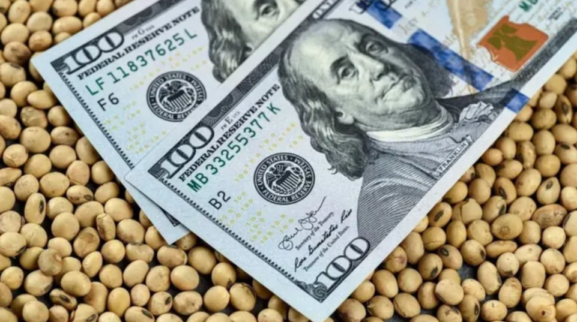

El gobierno compra dólares pero también enfrenta deuda. ¿Podrá sumar los dólares de la cosecha gruesa?
El Banco Central sostiene un fuerte ritmo de compras en el mercado cambiario pero las reservas netas no crecen, ya que el peso de la deuda limita la recomposición. Esta dinámica dominó el flujo de divisas durante el primer trimestre del año y le pone un piso a la baja del riesgo país.
Así lo subrayó Maximiliano Gutiérrez, responsable de la sección Monetaria Cambiaria de la revista Novedades, que edita la Fundación Mediterránea. El economista subrayó que en lo que va de 2026 el BCRA acumula compras por más de u$s 4.600 millones, tras 62 ruedas consecutivas en terreno positivo. El flujo de dólares proviene, fundamentalmente, de la oferta financiera, impulsada por las emisiones de Obligaciones Negociables (ON) privadas y el financiamiento externo obtenido por las provincias (u$s 11.800 millones entre noviembre y marzo), y la expansión de los préstamos en dólares, sujetos a la obligación de liquidación en el mercado libre de cambios (u$s 2.730 millones en el primer trimestre). Complementariamente, aportan los saldos comerciales provenientes del superávit en la cuenta de bienes.
Pero comprar divisas no implica necesariamente acumularlas. Durante el primer trimestre, las reservas brutas registraron un incremento neto de solo u$s 885 millones, finalizando con un stock de u$s 42.052 millones.
Gutiérrez recordó que el Central sumó reservas en ese período por compras en el mercado de cambios (u$s 4.386 millones), por el Repo de u$s 3 mil millones tomado en enero (fondos que luego fueron adquiridos por el Tesoro para el pago de vencimientos de deuda soberana) y por el efecto valuación derivado de las fluctuaciones en el precio del oro y cambios en la cotización del yuan/DEG respecto al dólar. Pero, en el mismo tiempo, afrontó pagos netos del Tesoro a organismos internacionales y a bonistas por u$s 5.195 millones, mientras que los pagos del propio Central vinculados a Bopreal y compromisos con el BIS apilaron u$s 1.697 millones.
Otro factor que contribuyó a la baja de las reservas fueron los encajes. A pesar que los depósitos en dólares del sector privado crecieron u$s 1.470 millones en el primer trimestre, los préstamos en dólares hicieron lo propio en u$s 2.730 millones. Esta dinámica hizo pasar el ratio entre préstamos y depósitos en dólares del 50% en diciembre al 55% a fines de marzo, generando una contracción de u$s 754 millones en el concepto de encajes.
La dificultad de acumulación es un aspecto del problema. El otro es la composición de las reservas. Las brutas comprenden la totalidad de los activos externos de la autoridad monetaria pero las netas funcionan como una “prueba de acidez”, al deducir los pasivos en moneda extranjera con vencimiento residual inferior a un año. Al 8 de abril, arrojan un saldo negativo de u$s 229 millones, que se ajusta a u$s 1.530 millones si se contemplan las obligaciones derivadas del Bopreal.
Por eso, pese al sostenido volumen de compras de divisas, la confianza del mercado “permanece supeditada a la ratificación de la acumulación de reservas como objetivo prioritario de la política económica”, aclaró el economista.
En este sentido, consideró que “la ausencia de definiciones taxativas sobre el programa de financiamiento para los servicios de deuda de 2026 y 2027 introduce una dimensión de incertidumbre adicional”. Si bien el equipo económico dijo que avanza en la negociación de un crédito por u$s 9.000 millones destinado a cubrir las obligaciones en moneda dura en lo que queda de la gestión, “todavía no se conocen suficientes detalles”, señaló.
En la última edición de su newsletter financiero, el Centro de Economía Política Argentina (Cepa) advirtió que la estrategia de financiamiento mediante dólares “encepados” (atesoramiento privado, fondos comunes de inversión y divisas ociosas en el sistema financiero local) está encontrando sus límites. Así lo demostraron, aseguró, los resultados de la última licitación de deuda en la que el gobierno continuó emitiendo bonos locales en divisas a 2027 y 2028. “Por primera vez, la Secretaría de Finanzas no pudo completar los límites de colocación”, señaló.
Los economistas de ese centro de estudios identificaron una serie de factores que concurren para endurecer esta restricción. De nuevo, que el BCRA compre divisas pero no las acumule figura en primer lugar. Luego está la “falta de credibilidad”, que genera dudas sobre el sostenimiento del programa de compra de reservas. En tercer lugar, el superávit fiscal luce poco sostenible. “Desde Wall Street e incluso desde ciertos sectores oficialistas comenzaron a considerar la posibilidad de que se pierda el ancla fiscal este año, dada la dinámica en la actividad económica”, apuntaron. La recaudación cayó sostenidamente en términos interanuales reales en los últimos ocho meses. El cuarto punto que señalan es el freno a la desinflación.
Pero el factor “absolutamente determinante” que señalan es la falta de certezas sobre “cómo va a afrontar el gobierno la deuda en dólares”, a tres meses de que venzan u$s 4.200 millones. “Ni hablar de los de enero y julio de 2027, por u$s 9.200 millones, para los que no hay siquiera una pista”, enfatizaron.
Pese a esta incertidumbre, el gobierno disfruta por ahora del ingreso al trimestre de oro, en el que el ingreso de la cosecha gruesa le pone un techo a la cotización del dólar. La Bolsa de Rosario, subió esta semana en mil millones de dólares la estimación de liquidación de divisas del agro, que llegaría a u$s 35.375 millones en 2026.
La pregunta que se hacen los analistas de Cepa es si estos dólares irán a las reservas. La duda se apoya en dos ideas: “Por un lado, parte de la liquidación ya se adelantó mediante carry trade; por el otro, en un mercado sin cepo para las personas humanas, un aumento en la oferta de dólares por liquidación de exportaciones no implica necesariamente un aumento de la oferta neta, ya que el productor puede darse vuelta y demandar dólares nuevamente, aunque sea por una parte”, indicaron.
La primera línea de razonamiento recoge la posibilidad que tienen los especuladores de iniciar posiciones de carry trade los primeros meses del año para salir, mediante la recompra de dólares, en el período de cosecha, cuando la expectativa de devaluación suele ser muy baja o nula. “Este adelanto se vio en la estabilidad del tipo de cambio durante el primer trimestre, incluso cuando las tasas de corto plazo se mantuvieron fuertemente negativas”, explicaron.
A su vez, en el primer bimestre se acumuló deuda comercial de importaciones por u$s 1.600 millones, mientras que los préstamos en dólares aumentaron u$s 2.944 millones en el año. “También parece razonable que estos saldos sean cancelados con el ingreso de la cosecha gruesa”, agregaron. Una tercera fuente de demanda pueden ser “las posiciones especulativas que, aunque son difíciles de estimar, podrían aproximarse al desarme de posiciones en títulos dólar linked, de u$s 3.200 millones en el trimestre”.
Por otra parte, nada impide que los productores recompren los dólares que liquiden en el mercado de cambios y que las empresas demanden cobertura por dólar MEP, futuros o dólar linked.
Para el Cepa, la clave para aumentar la oferta neta de dólares es que suba la demanda de dinero, “ya sea traccionada por mayor actividad o porque la tasa de interés le gana a la tasa esperada de suba del dólar”. La certeza es que, con la actual combinación, cuando pase la cosecha gruesa, “será más difícil continuar con este nivel de compras de divisas”.
Como esa acumulación es clave para hacer frente a los compromisos de deuda del Tesoro, los economistas concluyen que el equipo económico “apelará nuevamente a un rescate internacional de cara a las elecciones”. Esto lleva a seguir el derrotero político de Donald Trump, que en noviembre enfrenta una elección clave en Estados Unidos, en medio de una situación compleja en distintos frentes, incluido el económico.